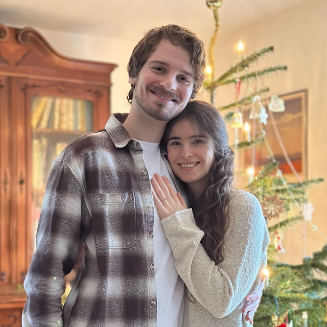

September 6, 2025
📍 Stevns Klint, Denmark
Our intimate family ceremony
The Ceremony
Join us for our intimate wedding ceremony at the breathtaking Stevns Klint. This special moment will be shared with our closest family members as we exchange vows with the stunning Danish coastline as our backdrop.
About Stevns Klint
Stevns Klint, Denmark
Stevns Klint is a spectacular chalk cliff formation on the Danish coast, recognized as a UNESCO World Heritage site. The dramatic white cliffs rising from the Baltic Sea create an unforgettable setting for our ceremony.
Accommodation
Møns Klint, Denmark
Our guests will be staying at Møns Klint, another stunning cliff formation in Denmark. The accommodation offers beautiful views and a peaceful setting for our wedding weekend.
Accommodation is available from September 4-8, so you may arrive early and/or stay longer if you wish.
What to Expect
- Intimate family ceremony
- Spectacular cliff-top setting
- Exchange of vows with ocean views
- Professional photography
- Celebration dinner
- Unforgettable memories
Attire
Wear whatever makes you comfortable!
There are absolutely no requirements or demands for attire - everyone can wear whatever they want. Whether you prefer formal, casual, or anything in between, the most important thing is that you feel comfortable and yourself. Just consider the outdoor cliff-top setting and coastal weather when making your choice.
Our Engagement
The moment we decided to share our love with the world!
Gifts & Wishlist
Your presence at our special day is the greatest gift of all! If you would like to give us something, we have created a wishlist to help guide your choice.
Please note: We don't expect to receive everything on the list - it's simply meant to give you ideas if you'd like to give a gift!
Schedule
Old Church, Stevns Klint
Snacks, refreshing beverages, and photos following the ceremony
You are welcome to explore Stevns Klint while we take dedicated wedding photos
Delicious meal with refreshing beverages at Møns Klint
Things to Do in the Area
Since accommodation is available from September 4-8, you're welcome to explore the beautiful Danish countryside and attractions in the region. Here are some suggestions for your stay:
🚢 Viking Ship Museum
Roskilde, Denmark
Discover Denmark's Viking heritage at this fascinating museum featuring original Viking ships and interactive exhibitions. Perfect for history enthusiasts!
🌍 Geo Center Møns Klint
Møns Klint, Denmark
Experience the geological wonders of Møns Klint at this interactive center. Learn about the dramatic chalk cliffs, fossils, and natural history of the area where you'll be staying.
For Family Members
Detailed information about the ceremony schedule, exact location, and accommodation arrangements will be shared directly with invited family members.